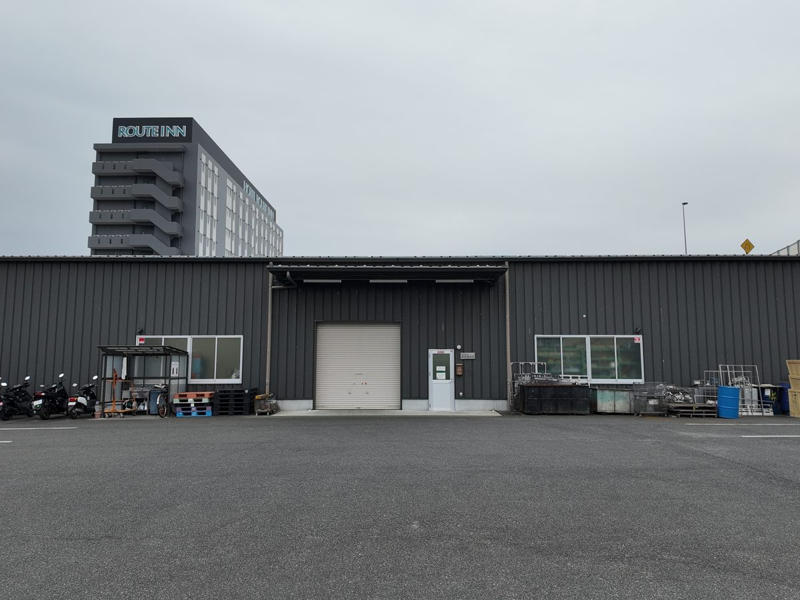

機械加工したフランジ・ハブ部品
機械加工したフランジ・ハブ部品
01
精度の求められる部品の機械加工
汎用旋盤・対話式フライスによる切削加工。高速機械向けの精密部品の加工実績があります。図面通りに正確に作ることへの信頼を、長年の取引で積み上げてきました。
金属でできているものなら、だいたい相談に乗れる
京都府久御山町の金属加工会社。創業40年以上。
小ロット・試作・特急にも対応しています。
「機械加工はできるが溶接はできない」「小ロットは断られる」——そういった問題を、弊社ではまとめて解決できます。思い当たるものがあれば、そのままご相談ください。
「とりあえず1個だけ作りたい」
はい、1個から承ります。試作・小ロットはむしろ得意としている領域です。
よくあるご質問で見る
「図面はあるが試作を急ぎで頼みたい」
小規模な会社だからこそ、優先順位の調整がしやすく、急な依頼にも動けます。
強みで見る
機械加工のあとに溶接が必要な製品がある
別の会社に送ることなく、工程をまたいでそのまま対応します。
対応領域で見る
「作った後の設置業者を別に探さなければならない」
部品を作って納品するだけでなく、現場への搬入・設置まで対応できます。
強みで見る
設備の修理・更新を相談したい
ユニットや設備の組立・現場設置まで対応します。設備の修理・更新案件もご相談ください。
お問い合わせへ
陶芸用電気窯のOEM製造を相談したい
陶芸用電気窯のOEM製造を手がけています。筐体の板金・溶接から、温度制御の配線・組み立てまで一貫対応。
陶芸窯OEMで見る
精度の求められる部品を1個から削れること。窓口を1社にまとめられること。急な依頼にも動けること。作って終わりにしないこと。この4つが、新井製作所に頼む理由です。
機械加工したフランジ・ハブ部品
汎用旋盤・対話式フライスによる切削加工。高速機械向けの精密部品の加工実績があります。図面通りに正確に作ることへの信頼を、長年の取引で積み上げてきました。
 大型の曲げブラケット（板金・溶接）
大型の曲げブラケット（板金・溶接）
通常は複数社に外注が必要な工程を、弊社1社でまかなえます。外注を減らすことで、コストを抑えて納期を短くできます。機械加工のあとに溶接が必要な製品も、別の会社に送ることなく対応します。
 大型の円盤・プレート部品
大型の円盤・プレート部品
「とりあえず1個だけ作りたい」「図面はあるが試作を急ぎで頼みたい」という依頼にも対応しています。小規模な会社だからこそ、優先順位の調整がしやすく、急な依頼にも動けます。
 装置用筐体（板金・溶接）
装置用筐体（板金・溶接）
部品を作って納品するだけでなく、現場への搬入・設置まで対応できます。「作った後の設置業者を別に探さなければならない」という手間が省けます。設備の修理・更新案件もご相談ください。
高速機械部品や精密計測機器向け部品など、品質基準の厳しい取引先との継続受注実績があります。
陶芸用電気窯のOEM製造を手がけています。筐体の板金・溶接から、温度制御の配線・組み立てまで一貫対応。ニデックドライブテクノロジー（株）（旧 日本電産シンポ（株））との長年の取引実績があります。
昭和61年に法人登記し、それ以前からの事業を含めると40年以上の実績があります。プレス・金型から始まり、自動車部品、繊維機械、陶芸窯と、時代に合わせて技術領域を広げてきました。
加工の各工程を複数社に分けて外注する必要がなく、窓口を1社にまとめられます。
※ すべての工程に対応しているため、工程に応じてご相談ください。

汎用旋盤・対話式フライスによる切削加工。精度の求められる部品を1個から対応します。高速機械向けの精密部品の加工実績があります。
レーザーによる切断から、曲げ・溶接まで対応。大型の曲げ加工は協力工場ネットワークを活用し、幅広いサイズに対応できます。
TIG・MIGなどの各種溶接に対応。機械加工と組み合わせた製品の溶接も、工程をまたいでそのまま対応します。
電気窯の温度制御・タイマー配線など、製品に必要な電装工事に対応。※ 高圧・専門資格が必要な工事は対応外です。
部品単体の供給だけでなく、ユニットや設備の組立・現場設置まで対応します。測定器・産業設備の組み立て実績があります。
電気窯の筐体製造から電装・組立まで一貫してOEM対応。ニデックドライブテクノロジー（株）（旧 日本電産シンポ（株））向けを中心に、業務用・教育機関向けで納入実績があります。


陶芸用電気窯を板金・溶接・電装・組立まで一貫して製造。業務用・教育機関向けで納入実績多数。中国向けの部品供給も継続しています。
機械加工から板金・溶接まで、製造に必要な設備を自社で保有しています。


| 旋盤（長尺） | オークマ | 1台 |
|---|---|---|
| 旋盤（汎用） | オークマ | 1台 |
| 旋盤（半NC） | 大日 DL53 | 1台 |
| たてフライス | 山崎技研 | 2台 |
| ひざ型フライス | 1台 | |
| ボール盤 | KIRA | 6台 |
| ボール盤（直立） | YOSHIDA | 1台 |
| 平面研磨機 | 400×500mm対応 | 1台 |
|---|
| レーザー加工機 | アマダ FOM11 R1-3015（5×10） | 1台 |
|---|---|---|
| ベンダー | アマダ FaBⅢ-8020（最大2,000mm対応） | 1台 |
| TIG溶接機 | DAIHEN | 3台 |
|---|---|---|
| 半自動溶接機 | DAIHEN | 2台 |
| 半自動溶接機 | Panasonic | 2台 |
| アーク溶接機 | 3台 |
※ 大型の曲げ加工など自社対応が難しい工程は、協力工場ネットワークを活用して対応します。
守秘義務の関係から詳細はお問い合わせください。代表的な納品実績をご紹介します。

高速機械に使われる精密部品の継続製造。厳しい寸法精度が求められる部品を長年安定供給しています。リピート受注として現在も継続中。

陶芸用電気窯を板金・溶接・電装・組立まで一貫して製造。業務用・教育機関向けで納入実績多数。中国向けの部品供給も継続しています。

溶接精度と寸法管理が求められる部品を継続納品。新規取引立ち上げ時の品質確立から、安定供給まで対応してきた実績があります。


困ったことがあれば、まず声をかけてみてください。
うちで何が作れるかを一言で言うと、「金属でできているものなら、だいたい相談に乗れる」ということです。機械加工も、板金も、溶接も、電装も、一通りやっています。だから、複数の会社に外注を回さなくても、ここ1社でまとめて対応できることが多い。それが弊社の一番の強みだと思っています。
「1個だけ作りたい」「急いで対応してほしい」という依頼も断りません。むしろ、そういう仕事が得意です。大量生産の仕事は海外に流れていますが、試作や小ロット、突発対応となると話は別で、そこに弊社の出番があると考えています。
おじいちゃんの代から始まり、三菱重工との仕事を起点に、自動車部品・繊維機械・陶芸窯と、40年以上この仕事を続けてきました。製造業が厳しい時代ですが、残って仕事を続けることが、お客様への一番の誠意だと思っています。困ったことがあれば、まず声をかけてみてください。
| 会社名 | 株式会社 新井製作所 |
|---|---|
| 所在地 | 〒613-0022 京都府久世郡久御山町市田鈴間108番地 |
| TEL / FAX | TEL: (0774)34-1075 / FAX: (0774)34-1076 |
| メール | arai.cop@fine.ocn.ne.jp |
| 設立 | 昭和61年（1986年）※ 法人登記年。それ以前から事業継続 |
| 代表者 | 代表取締役 小畑 美由紀 |
| 従業員数 | 約10名 |
| 主な事業 | 機械加工・板金・レーザー加工・溶接・電装・組立・陶芸窯OEM製造 |
| 主要取引先 | ニデックドライブテクノロジー（株）（陶芸窯部門）、大手製造業・精密機器メーカー ほか |
| 対応ロット | 1個〜（試作・小ロット歓迎） |
| 対応納期 | 要相談（特急対応あり） |

お問い合わせの前に多くいただく質問をまとめました。ここにない内容もお気軽にご相談ください。
はい、1個から承ります。試作・小ロットはむしろ得意としている領域です。
ご相談いただけます。【要確認：現物・スケッチ・写真など、どこまでの状態から受けられるかを記載します】
【要確認：鉄・ステンレス・アルミなど、実際に対応されている材質をここに記載します】
機械加工：【要確認：旋盤の振り・加工長、フライスのテーブルサイズなど、受けられる最大ワークサイズをmmで記載します】
板金：曲げは最大2,000mmまで自社で対応しています（アマダ FaBⅢ-8020）。レーザー加工機は5×10サイズ対応機（アマダ FOM11 R1-3015）です。【要確認：実際に受けられる最大寸法をmmで記載します】大型の曲げ加工など自社で難しい工程は、協力工場のネットワークを活用して対応します。
精度の求められる部品を1個から対応します。【要確認：旋盤・フライスで日常的に出している公差の目安、測定の方法をここに記載します】
対応ロットは1個〜（試作・小ロット歓迎）です。【要確認：1個からの見積の考え方（段取り費の扱いなど）、量産との違いをここに記載します】
【要確認：「小物の機械加工で◯日前後」「特急は最短◯日」など、言い切れる目安をここに記載します】
【要確認：部品の発送は全国可／現場への設置対応は◯◯エリア、など実態をここに記載します】
すべての工程に対応しているため、工程に応じてご相談ください。【要確認：機械加工だけ・溶接だけなど、1つの工程だけのご依頼を受けるか】
ここに無いご質問は、お問い合わせフォームからどうぞ。
図面がある場合はお送りください。ない場合もご相談ください。内容を確認のうえ、担当者よりご連絡します。